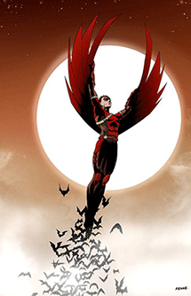

Tim Drake
History
Tim Drake is a vigilante and member of the Batman Family. He became the third Robin at a young age, succeeding Jason Todd as Batman's sidekick. Eventually, he would be forced to give up the identity of Robin, before he was ready and would begin wearing the costume of Red Robin when he's replaced by Damian Wayne.
Red Robin
Tim believes Bruce is still alive somewhere after seeing a painting of his "ancestor" Mordecai Wayne in Wayne Manor. He is angered when Dick chooses Damian Wayne to be Robin instead of him, and nobody believes him when he insists that Bruce is still alive. Traveling to Europe to investigate Bruce's disappearance, he begins wearing the Red Robin costume as it will allow him to become darker without tarnishing an existing symbol. In Paris he's attacked by Owens, Pru and Z of the League of Assassins but it's revealed that this is Ra's al Ghul reaching out to help him. These assassins help him fight the Wild Huntsman when he infiltrates a museum, and Ra's explains that they are completely in Tim's service. This leads him to a cave painting that proves Bruce is lost in time, but outside they're attacked by Widower of the Council of Spiders who kills Owens and Z.